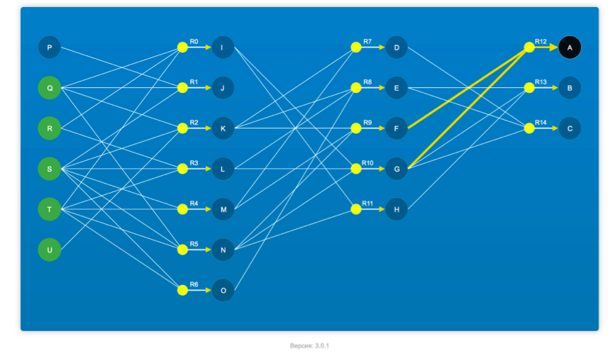
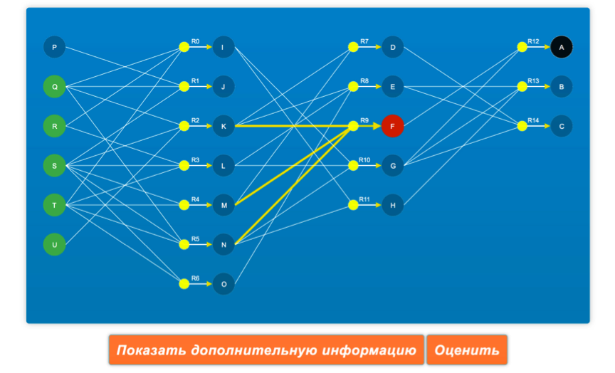

Обратный вывод
Уважаемые студенты!
Здесь собраны методические указания для успешного выполнения лабораторных заданий по теме обратный вывод в Научной лаборатории ИСиТ НИЯУ МИФИ.
Термин «фрейм», который в ранних работах по ИИ переводился как «скелет», «ситуационная рамка», «каркас» и т.д., стал популярным после выхода в свет в начале 1970-х гг. знаменитой работы М.Минского, где фрейм определяется как «структура данных для отображения стереотипной ситуации», т.е. некоторое формализованное знание о стереотипной ситуации ПрО.
С точки зрения модельного аспекта фрейм — это сеть, у которой одна часть всегда заполнена, а другая содержит незаполненные подструктуры-слоты. Иными словами, фиксируются постоянные имена актантов ситуации, описываемой фреймом, — это имена слотов, а значения слотов определяются в зависимости от выполнения условий/требований к каждому актанту ситуации.
Эти условия могутбыть заданы самым разнообразным способом, включая использование привязанных процедур, умолчаний, имен других фреймов, множественных ссылок и т.д. Во фреймах допускается рекурсивное фложение слотов друг в друга, что может пораждать иерархическую структуру взаимосвязанных слотов и фреймов.
В общем случае, используя теоретико-множественное представление, фрейм (F) может быть описан в виде следующей конструкции:
F = <N,a1 b1 [P1], a2 b2 [P2], ..., an bn [Pn]>,
где
N— имя фрейма;ai— имя i-слота;bi— значение i-слота;[Pi]— процедура, привязанная к i-слоту (опционально);
Важно, что в качестве значений слотов могут выступать имена других фреймов, что обеспечивает связь между ними.
Обычно выделяют фреймы-прототипы, хранящиеся в БЗ, и фреймы-экземпляры, которые создаются на основе фреймов-прототипов для отображения конкретных ситуаций на основе поступающих данных.
Ниже показан пример фрейма-прототипа для ситуации "сдача экзамена в вузе".
| Сдающий | (студент, аспирант, абитуриент, группа) |
| Принимающие | (лектор, ассистент, комиссия) |
| Предмет/Дисциплина | (название предмета/дисциплины) |
| Результат | (оценка, баллы) |
| Место/Время | (расписание сессии) |
Комментируя этот пример, можно указать на важнейшее свойство фреймов, связанное с тем, что удаление из этого описания любого актанта приводит к потере свойств, определющих суть данного явления — сдача экзамена в вузе.
Другая сильная сторона фреймов заключается в возможности включения в слоты фрейма различных предположений и ожиданий, что позволяет моделировать ситуации, в которых отсутствует упоминание о различных деталях (например, широкое использование по умолчанию некоторых стандартных для ситуации значений и т. п.)
Фреймы легко организуются в однородные и неоднородные сети фреймов, что позволяет многим специалистам в области ИИ считать фреймы частым видом специально организованных семантических сетей.
Источник: Основы построения интеллектуальных систем. Г.В. Рыбина
Введение
В новой версии программы для разрешения конфликтов были применены коэфициенты определенности правой части правила.
Все конфликтные ситуации разрешаются путем выбора правила с наибольшим коэффициентом определенности.
Для прохождения тестирования у вас будет ограниченное время:
- Прямой вывод - 7 минут
- Обратный вывод - 8 минут
В правом верхнем углу всегда отображается справочная информация, которая будет исключать «в корне» неправильные действия.
При прохождении прямого вывода у вас будет возможность редактирования и удаления шагов с трассы вывода, а при прохождении обратного вывода только удаление.
Если у вас возник конфилкт коэффициентов, то нужно выбрать тот, чей номер правила меньший.
Сценарий лабораторной работы
Первое, что вам необходимо сделать – авторизоваться по вашим логинам и паролям, которые вам предоставят инженеры кафедры.

После авторизации, вы получаете доступ к панели управления в режиме RunTime.
Далее, вам надо нажать на ссылку Прямой вывод или Обратный вывод. Вам откроется таблица с вашими результатами.
Далее нажимаете на ссылку Пройти тестирование и проходите тестирование выбранного вами вывода.
Прохождение обратного вывода
Выбираем в панели управления прохождение обратного вывода. Открывается окно Выбор начального состояния.
сюда нужны НОВЫЕ скриншоты
Также предупреждаем, что попытка прохождения тестирования после начала прохождения исчерпается.
Здесь вам нужно указать начальное состояние РП и выбрать основную цель.
Не забывайте про то, что начальное состояние РП нужно выбирать с самого нижнего уровня слева, а основную цель с самого высокого справа.
В примере получится вот такая картина, после нажатия на кнопку готово.
сюда нужны НОВЫЕ скриншоты
Для получения положительной оценки, вам нужно найти правило, к которому принадлежит основная цель. В нашем случае это правило R12, смотрим какие факты нам необходимы для возможности срабатывания данного правила
сюда нужны НОВЫЕ скриншоты с выбранным правилом R1
По примеру получается F(0.91) и G(0.05). Но на данный момент в РП нету ни одного факта, для выполнения правила R12.
 сюда нужны НОВЫЕ скриншоты
сюда нужны НОВЫЕ скриншоты
В вашей версии программы с приминением коэффициентов определенности нужно выбирать не любую подцель , а ту, которая имеет НАИБОЛЬШИЙ коэффициент определенности ПЧП.
Для этого нажмите, на факт F (так как по примеру его коэффициент определенности больше чем у G) и подтвердите создание поддцели.
сюда нужны НОВЫЕ скриншоты
По примеру получается вот так.
сюда нужны НОВЫЕ скриншоты
Опять смотрим наличие фактов в РП для срабатывания правила R9. Опять их нет в РП, поэтому выберем один из фактов правила R9, например факт К (допустим у него самый максимальный коэффициент определенности) сделаем текущей подцелью.
сюда нужны НОВЫЕ скриншоты
Правило R2 при факте К может выполнится поэтому мы его выполняем сразу. Нажимаем на желтый круг R2, откроется окно
сюда нужны НОВЫЕ скриншоты
Здесь есть несколько ключевых моментов. Во первых вам надо указать изменение РП, по примеру нужно добавить К изменение РП, а также указать факт К как сработанную подцель и еще указать состояние правил.
После нажатия на кнопку готово, все действия на данном шаге покажутся на трассе вывода, а также вы вернетесь по стеку на одну подцель назад.
сюда нужны НОВЫЕ скриншоты
Смотрим опять правило R9, у него не хватает фактов для выполнения, значит опять выбираем подцель, например факт M
сюда нужны НОВЫЕ скриншоты
Так вы делаете все действия, пока не добьетесь ситуации, в которой все факты правила основной подцели будут в РП. По примеру должно быть наличие фактов F и G. Последним шагом будет срабатывание правила R12 (по примеру) с указанием изменения РП факта А, срабатывание подцели А, а также все состояния правил.
Если вы выбрали подцель и правило данной подцели может выполнится – вы должны его выполнить сразу, если правило не может выполнится - вы должны выбрать новую подцель из фактов данного правила(которых нет в РП) иначе вы можете получить плохую оценку.
Любое изменение текущей подцели заносит ее в стек. Поэтому при срабатывания какого-нибудь правила подцель автоматически вернется на предыдущую подцель.